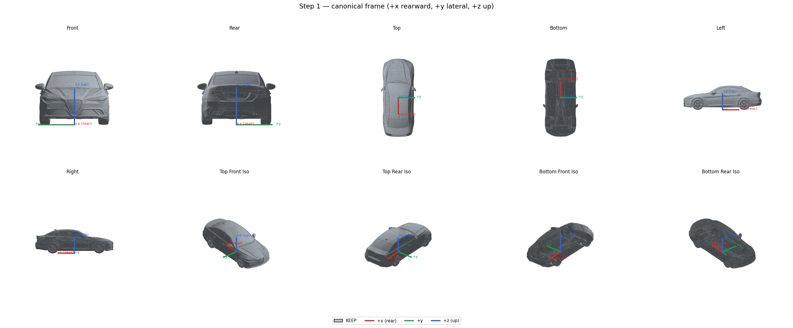
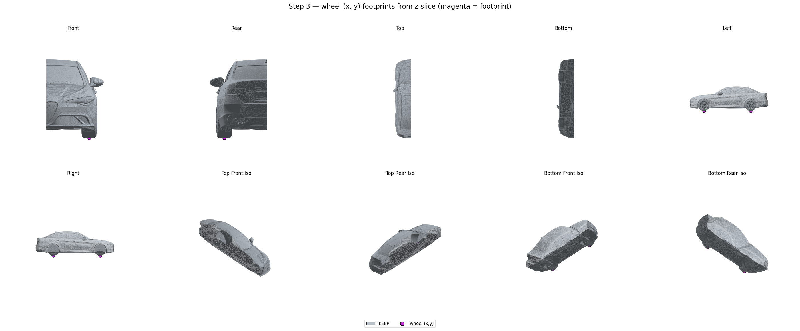
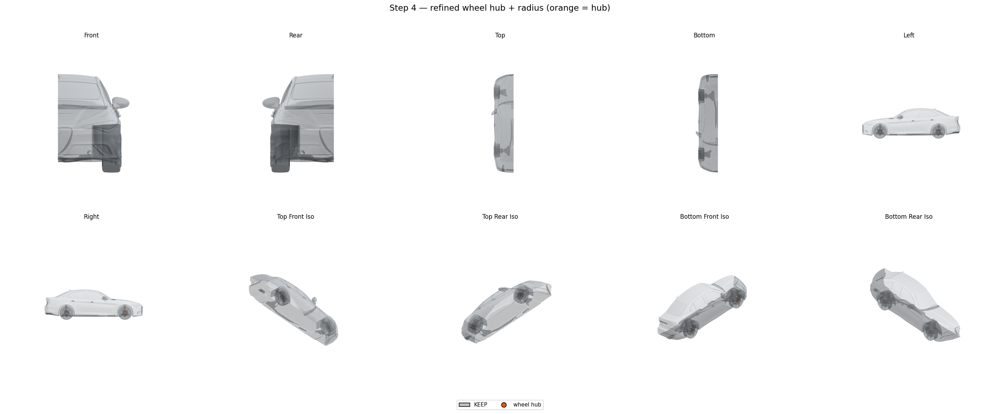
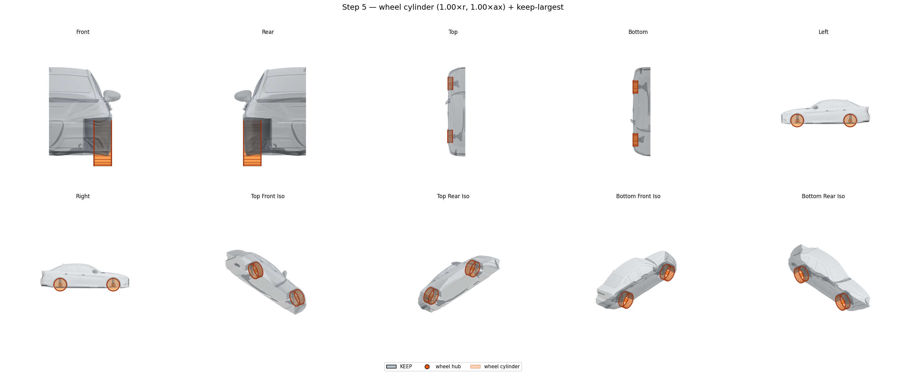
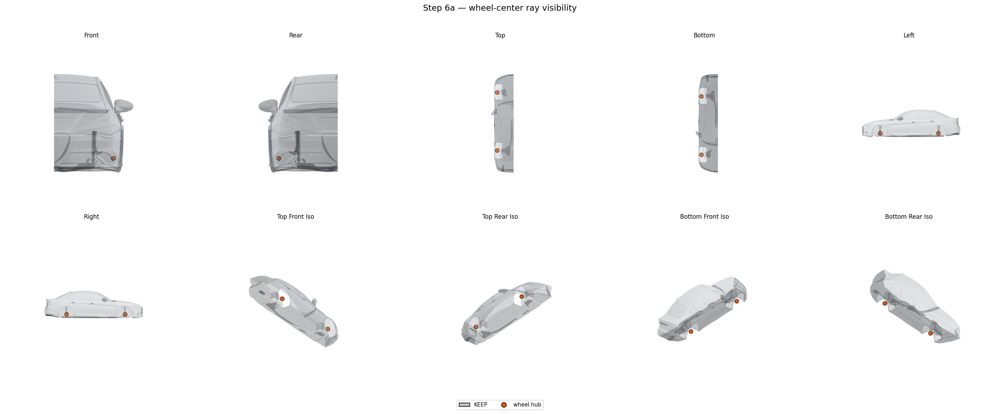
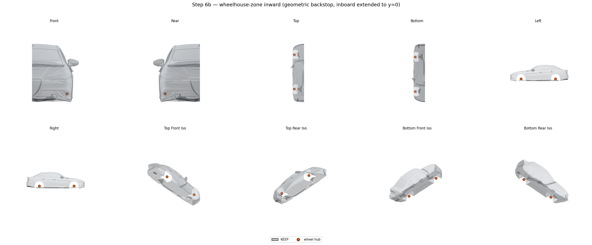
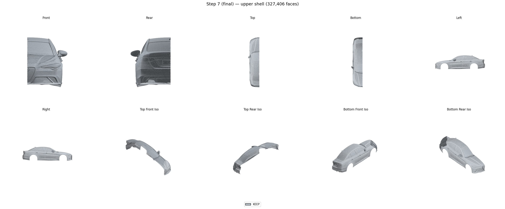

Upper Shell Extraction
Strip wheels, wheelhouses, and underbody from a watertight whole-car reconstruction so the remaining upper-body shell can be merged with a parametric underbody. Seven sequential steps; visibility-driven cut with a geometric "cut zone" guard.
Overview
The input is a watertight mesh covering the entire vehicle (typically a
"shadowfill" reconstruction from an UltraShape / Hunyuan3D pipeline) in
any axis convention. The output is a single connected upper-body
shell ready to be unioned with the parametric underbody produced by the
generate entry point.
The pipeline processes the full car (both sides). Step 2
(the y = 0 planar cut) was retired — every later step is symmetric across
y = 0 already and the planar cut was only a holdover from a half-car
workflow. Each step modifies (or labels faces of) the working mesh and
writes an STL when run in debug mode. All renders below are produced by
paramub.shell.render (10-panel matplotlib composite,
Lambertian shading, per-step bounds).
| # | Function | Operation |
|---|---|---|
| 1 | s1_canonicalize |
Detect input axes; rotate/translate to +x rearward, +y lateral, +z up; centre on x = 0; snap z = 0 to the ground. |
| 3 | s3_locate_wheel_xy_full |
z-band x-cluster split by sign(y) → 4 wheel footprint centres (full car). |
| 4 | s4_locate_wheel_z |
Y-slab + component-from-contact + circle fit → hub centre + tire radius + axial half-width. |
| 5 | s5_cylinder_remove |
Mark faces inside the tight tire cylinder; drop debris. |
| 6a | s6a_wheel_center_visibility |
Cast Fibonacci-sphere rays from inside the wheel cavity → first-hit faces are inward wheelhouse surfaces; remove them in one pass. Ray directions are y-symmetric and the inboard origins flip with sign(y) so left and right are treated identically. |
| 6b | s6b_wheelhouse_zone_inward |
Geometric backstop: remove inward-facing faces in an expanded wheelhouse zone (inboard side extended to y = 0 from both sides). |
| 7 | s7_classify_visibility |
Per-face two-hemisphere visibility classifier (KEEP / REMOVE / DROP), constrained to a cut zone so distant body parts can't be holed. |
| 8 | recut_with_longest_rim (paramub.shell.recut) |
Trace the longest open-boundary component of the step-7 shell; use its edges as a 3-D scissor on the canonical mesh to recover any faces that step 5–7 over-removed inside the rim. |
Step 1 — canonicalize
s1_canonicalize auto-detects which input axis is "up" (the
one whose minimum sits closest to zero, i.e. the car rests on it) and
which horizontal axis is longest (the longitudinal direction). It builds
a permutation rotation R that maps those to +z
and +x respectively, optionally flipping the
longitudinal axis so the rear of the car sits at +x. Translation
re-centres the body so x = 0 splits front/rear and z = 0 sits flush with
the lowest vertex.

10-panel view of the canonical mesh. The coloured triad in each panel marks the canonical frame (+x rear, +y lateral, +z up). All later steps operate in this frame.CanonicalFrame
(R, t) so downstream tooling can place the upper shell
back into the original input frame via
frame.inverse_apply(v_canon).
Step 2 — removed
The y = 0 planar cut was retired. The remaining steps are symmetric across y = 0 and operate on the full canonical mesh directly.
Step 3 — wheel (x, y) footprints (full car)
s3_locate_wheel_xy_full samples a thin z-band (default
z_band_height = 0.02 × bounding-box height) just above
the ground, k-means-clusters the centroids along x into
n_axles = 2 axles, then splits each axle cluster by
sign(y) so we get one wheel per (axle, side) corner —
4 wheels total. The earlier half-car helper
s3_locate_wheel_xy still exists for backwards compat but
is no longer used by run_shell.py.

Magenta dots mark the detected (x, y) footprint of each wheel — drawn at z = 0 so they sit on the ground plane.Step 4 — wheel hub Z + radius
Bare circle-fitting against a thin x-slab tends to pull the hub centre
upward because the wheelhouse arch leaks into the slab. Instead,
s4_locate_wheel_z:
- Takes a thin Y-plane slab at
y = w.y. The Y-slab cuts cleanly through the tire's circular silhouette in X-Z and ignores anything above the wheelhouse opening. - Runs face-adjacency connected components on the slab faces. The tire is one component; the wheelhouse walls, suspension, and brake disc are separate components.
- Picks the component containing the most ground-contact faces (low z + close in x to the footprint centre) — that's the tire.
- Fits a circle to the chosen component's centroids in X-Z. The fit's (cx, cz) is the hub position.
- Sets radius = max(r_fit, cz) — the tire touches z = 0, so its outer radius equals the hub height.
- Estimates the tire axial half-width from the 95th-percentile
y-extent of the contact patch, clamped to
[0.20, 0.40]× radius.

Orange dots are the refined 3-D hub positions. Each carries r (tire OD) and axial_half (tire half-width) used by step 5.Step 5 — wheel cylinder removal
s5_cylinder_remove marks every face whose centroid sits
inside a tight cylinder centred on the hub for removal:
radius = w.radius × radius_factor (default 1.00)
axial_half = w.axial_half × axial_factor (default 1.00)
cylinder axis = +y (tire spin axis)
After the cut, keep_largest_component drops any small KEEP
islands that the cylinder isolated from the main body. Faces touching
the y = 0 plane are protected — so the planar boundary from step 2
survives.

Translucent orange cylinders show the tight tire envelopes that were removed; the body is now hollow at each wheel position but the wheelhouse interior surfaces are still present.Step 6a — wheel-center ray visibility
With the tire gone, the wheelhouse cavity is now exposed. s6a_wheel_center_visibility
builds an Embree intersector from the post-s5 KEEP submesh and casts
16 384 Fibonacci-sphere rays from each of 7
origins per wheel:
- The hub centre.
- 6 points on the upper half of the cylinder's inboard edge (so rays can sweep through the brake/suspension region).
Every face hit becomes a candidate for REMOVE; all hits are aggregated first, then applied in one pass. Hits outside the wheelhouse zone (2.5 × r × 2.0 × axial_half) or above a z-cap (2.2 × hub_z) are rejected so the rays cannot punch through the upper body. Faces already in the s5 REMOVE set are excluded from the intersector so they don't shadow the rays.

Body after the single-pass ray REMOVE. The wheelhouse arch top and most of the inner liner are gone; some inward-facing suspension / inboard liner remains because brake-disc / strut geometry occludes every ray from the seven origins.Step 6b — wheelhouse-zone geometric backstop
Some inward-facing surfaces (inboard wheelhouse wall, control-arm tops)
are never visible from inside the wheel cavity because the
brake disc or suspension hardware sits directly between them and every
ray origin. s6b_wheelhouse_zone_inward catches them with a
purely geometric test:
face is REMOVE if BOTH:
centroid sits inside an enlarged cylinder
(radius_factor = 1.4, axial_factor = 1.7,
inboard side extended all the way to y = 0)
AND face's outward normal points toward the hub
(cos(normal, hub - centroid) ≥ 0.30)The inboard extension to y = 0 covers the deep inboard wall and any suspension hardware at any depth; the outboard side keeps the symmetric envelope.

After 6b. The inboard wheelhouse wall and remaining suspension are gone; what's left around each wheel is the outer perimeter of the arch, which the lower-cut in step 7 will trim flush with the rocker.Step 7 — lower-perimeter cut (visibility + cut zone)
Two-hemisphere visibility classifier
s7_classify_visibility casts a Fibonacci-sphere bundle
(default 96 directions, equator band ±15° skipped) from each face's
epsilon-nudged centroid. For each ray on the triangle's outward side, an
Embree query tests whether it hits any other triangle. The verdict per
face:
| Label | Condition |
|---|---|
KEEP |
at least one upper-hemisphere ray escapes (visible from above). |
REMOVE |
no upper escape, but at least one lower escape (visible only from below). |
DROP |
no rays escape (interior / sealed cavity). |
A cheap geometric prefilter (face in bottom 31 % of z-envelope AND downward normal) pre-marks obvious underbody faces so the lower-pass rays for those faces can be skipped.
Cut zone
Without a guard, the classifier punches holes in any feature that is partially recessed (bumper intake, headlight bezel, mirror underside, vent). The cut zone constrains every REMOVE/DROP to a region where it is structurally safe — outside the zone, faces are forced back to KEEP:
cut_zone = (z < floor_z_max) # bottom 15 % of body
∪ (enlarged wheel cylinders)
radius_factor = 1.3
axial_factor = 1.3 (inboard)
outboard side extended → body y_min
(so the cylinder is flush with the floor slab)
Finally, KEEP faces are passed through keep_largest_component
without the y = 0 protect mask — the output is a single
connected upper shell; tiny y = 0-edge slivers from the lower-cut get
dropped along with the rest of the debris.

Final single-component upper shell, left half only (~327 k faces from a ~1.5 M-face whole-car input). Ready to be mirrored, ground-aligned, and unioned with the parametric underbody.Driver: run_shell.py
All seven steps are wrapped by run_shell.py at the repo
root. It takes one input mesh and writes either the final STL alone or
the final + per-step debug STLs + per-step PNG composites.
conda activate paramub
# Production — just the final shell + metadata
python run_shell.py
# Debug — also export per-step STLs to outputs/shell/<name>_debug/
python run_shell.py --debug
# Render — also write the 10-panel PNG composites used in this guide
python run_shell.py --render
# Both
python run_shell.py --debug --render
# Custom input / output
python run_shell.py --input path/to/mesh.stl --output-dir outputs/run1
Outputs
| File | When | Contents |
|---|---|---|
<name>_final.stl | always | Single-component upper shell. |
<name>_meta.json | always | Numeric metadata: canonical frame matrix, wheel hub positions, per-step face counts, step-7 KEEP/REMOVE/DROP totals. |
<name>_debug/stepN_*.stl | --debug |
step1 canonical · step2 left half · step5 kept + wheel cylinders · step6a kept · step6b kept · step7 cut-zone volume + KEEP/REMOVE/DROP + boundary tube. |
<name>_renders/stepN_*.png | --render |
10-panel composites (Front, Rear, Top, Bottom, Left, Right, +4 iso). |
Tuning knobs
The defaults work for the test corpus; adjust if a specific mesh gives a poor cut.
| Where | Knob | Default | Effect |
|---|---|---|---|
| s5 | radius_factor / axial_factor |
1.00 / 1.00 | Wheel-removal cylinder size. Larger eats bodywork; smaller leaves tire bits. |
| s6a | n_rays_per_origin | 16 384 | Fibonacci-sphere ray count per origin. |
| s6a | zone_radius_factor / zone_axial_factor |
2.5 / 2.0 | Outer cap on which hits qualify for REMOVE. |
| s6a | z_max_factor | 2.2 | Hits above 2.2 × hub_z are rejected (protects the upper body). |
| s6b | radius_factor / axial_factor |
1.4 / 1.7 | Geometric wheelhouse zone (inboard side extends to y = 0 regardless). |
| s6b | inward_cos_threshold | 0.30 | How "inward" a face must point to qualify (cos with hub direction). |
| s7 | n_dirs | 96 | Fibonacci-sphere ray bundle size per face. |
| s7 | equator_band_deg | 15.0 | ± elevation band around the equator that does not vote for KEEP or REMOVE. |
| s7 | prefilter_z_band_frac | 0.31 | z-fraction of the body to consider "lower" for the cheap prefilter. |
| s7 | prefilter_normal_z_max | −0.30 | Downward-normal threshold for the prefilter (cos of the normal with +z). |
| driver | CUT_ZONE_FLOOR_FRAC | 0.15 | Floor band height as a fraction of the body's z-envelope. |
| driver | CUT_ZONE_WHEEL_FAC | 1.3 | Multiplier on the wheel cylinder's radius and inboard axial half (outboard side always extends to body y_min). |